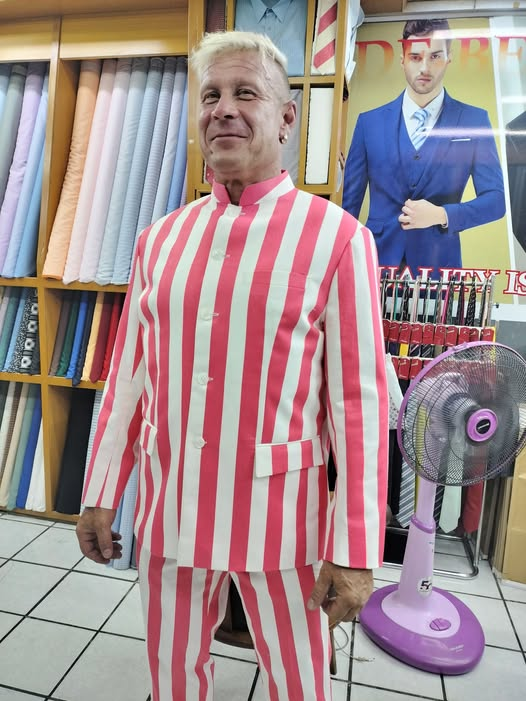
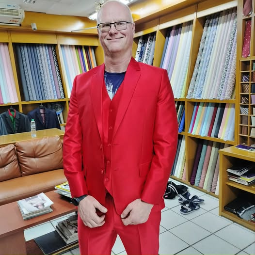
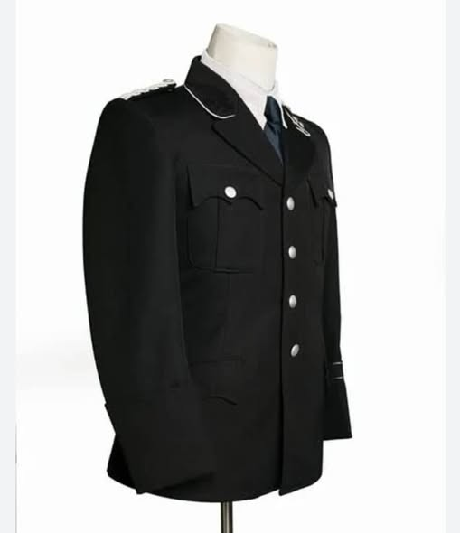

The Business Suit
Constructed with half or full-canvas for a drape that improves over time. Thousands of Italian and British wools to choose from, ranging from Super 120s to Super 180s.
- ✓ Hand-rolled lapels
- ✓ Working buttonholes (surgeon's cuffs)
- ✓ Personalized silk lining

Formal Wear
Wedding tuxedos and morning coats tailored for your most significant moments. Whether it's a classic black-tie event or a tropical beach wedding, we ensure you stand out.

Custom Shirts
The foundation of a great suit. Choose from premium Egyptian cotton, sea island cotton, and linens with dozens of collar and cuff styles available.
